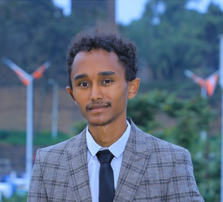

Markos Sebhat
Software developer and IT expert having a track record in the information technology and services industries. Having experience in large corporations and government agencies, as well as QA tester.
I'm looking for a challenging job with a forward-thinking company that will allow me to put my
technical talents and abilities in the field of information and communication technology to
good use.
👉 markossebhat21@gmail.com
Tech stack
JavaScript, NodeJS,React
Laravel, Express, Angualr, RestAPI
Java,.net core
Postgres, MongoDB, MySQL
Work History
🚧 Software Enginner eTech | Addis Ababa
eTech S.C. eTech is an end-to-end ICT solutions provision company setup by highly skilled technical and
business professionals from around the world.
Worked as A Full Stack Developer Position
- Finot Saving and Credit Portal - is a software designed to manage and facilitate the saving and
credit system for Finot saving share company
🚧 Software Developer
John Snow, Inc. is a global public health consulting organization dedicated to greater health
equity and improving the health of individuals and communities.
Worked as A Full Stack Developer Position
- Phem is a compound software solution designed to manage supply chain functions at service
delivery points for Ethiopian Red Cross Institution.
- Dagu is a compound software solution designed to manage supply chain functions at service
delivery points. It includes an inventory management system at the facility store level and a
patient service management system at the dispensing unit level. It is designed to manage daily
transactions incorporating the business process and operations at each health facility.